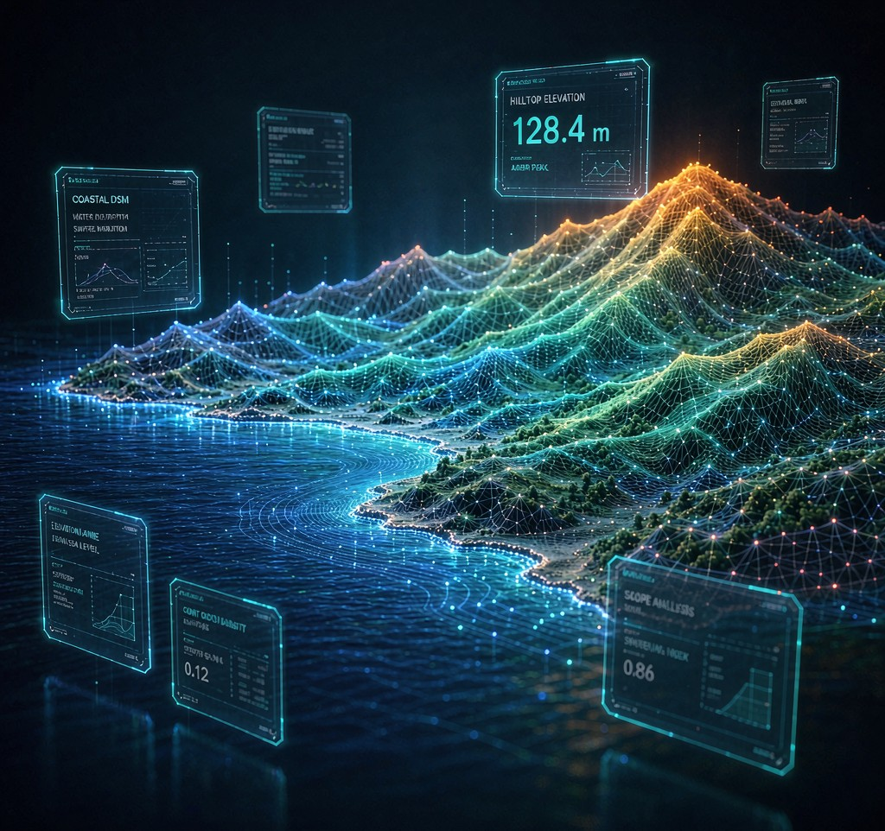
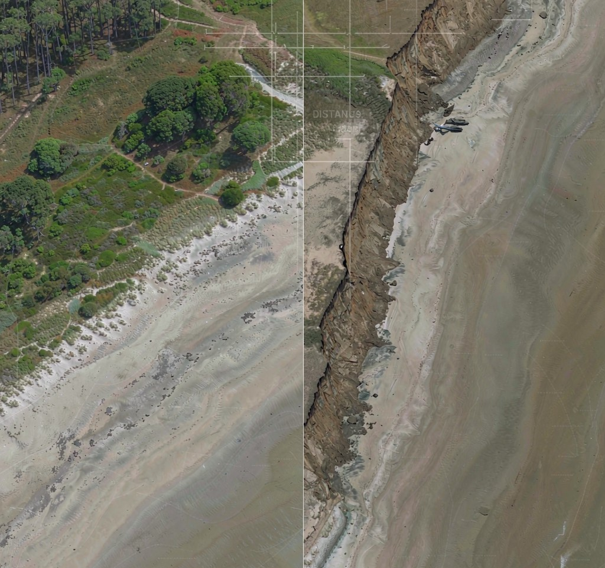
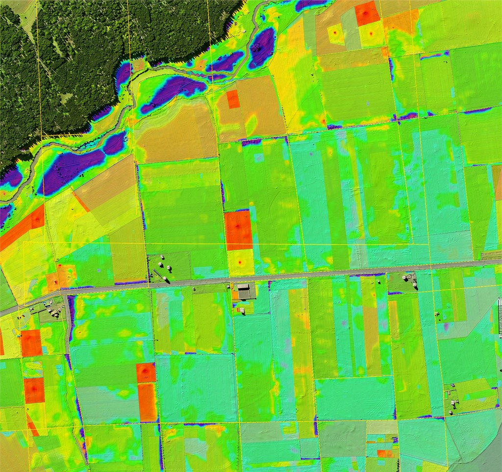
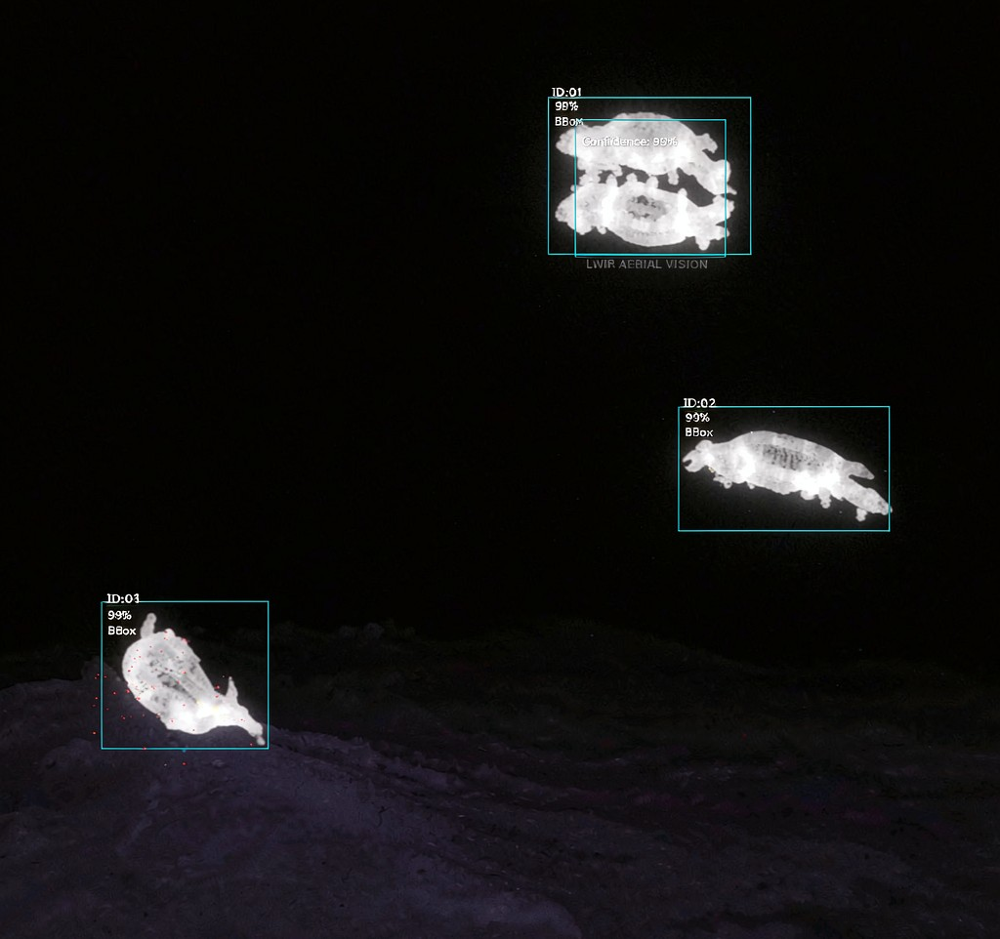

四大模块已完成端到端开发与内部验证，正在寻找真实场景落地。
上传多视影像，自动 SfM 摄影测量，输出正射图/DSM/DTM/点云。
FFT 互相关自动补偿两期地理漂移 · 中位数基准垂直对齐 · 差值可视化与统计。
EMI 电磁感应 + GPR 探地雷达 + MAG 磁法三源融合，AI 聚类风险分级。
4a 热红外野生动物探测 + 4b 多光谱植被受损分级，DBSCAN 聚群 + 多指数融合。
影像上传后自动完成 SfM 三维重建，输出带高程色带的数字表面模型。水系、坡度、冲沟、侵蚀陡坎——全部量化为可追溯的数据，而不是一堆靠肉眼判断的照片。

以下为开发阶段基于公开数据集与合成基准的技术验证结果。

基于 18 张公开航拍影像（约 0.3 km² 海岸线）构造灾前/灾后双期场景。在无 GCP 条件下，两期重建地理放置差 22.22m，平台自动 FFT 配准补偿至 RMS 7.6m，达到可交付的定损精度。

构造 4 类植被（健康/轻损/重损/枯死）各占 25% 的标准验证场景。平台输出分级面积比 25.01% / 24.99% / 25.00% / 25.00%，误差 0.04%，分级算法达到可用精度。

构造 30 只热源个体（10 群）、背景 25°C / 目标 35°C、叠加 0.5°C 噪声的模拟场景。平台检测到 26 只，检出率 86.7%，误检 0。
注：验证区配图为 AI 生成示意图，仅用于版式演示；正式对外将替换为平台真实成果截图。
我们正在寻找首批 Pilot 客户，在真实业务场景中验证平台价值—— 聊聊你的场景 →
四大模块端到端可用，技术验证全部通过，AI RAG 文档问答上线。
与无人机服务商 / 保险 / 应急部门合作，在真实灾后与巡护任务中验证交付质量。
V1 稳定交付；V2 引入 YOLO 真物种识别与更智能的异常检测模型。
面向灾后定损、环境监测、生态巡护的行业化解决方案与订阅服务。
灾后应急评估、保险定损、环境监测、生态巡护——每年大量任务依赖航拍，但商用方案（大疆司空等）年费 5 万起，中小机构难以负担，大量需求未被满足。
完全开源技术栈 + 私有化部署，无授权费、无数据外流。客户的数据、模型、部署完全自主可控，这对政府与保险客户是关键卖点。
零 GCP 自动配准（FFT 相位相关 + 保守校验）、UXO 三源融合探测、多传感器一体化分析——均为自研算法，且有量化验证指标支撑。
所有中间产物与统计结果落 artifacts/ 目录，算法选型（MAD/FFT/DBSCAN）均有实测对比。这不是 PPT 项目，是可运行的平台。